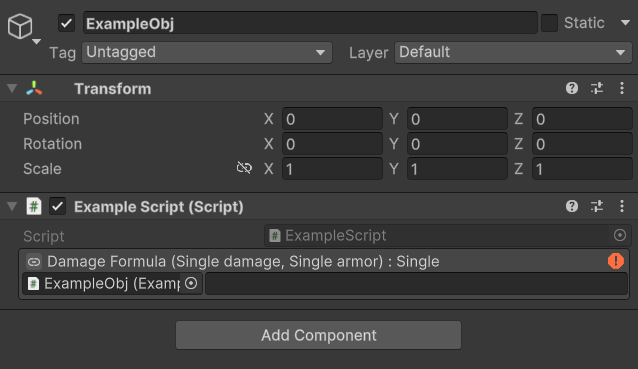
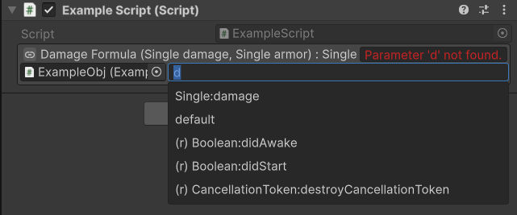
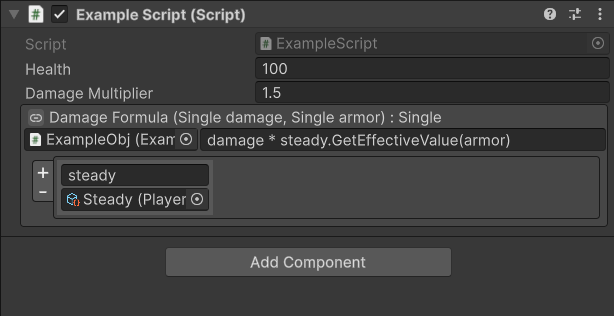
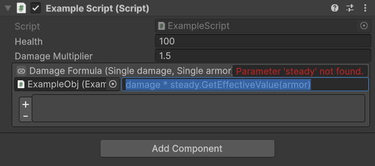

Getting Started
UCalc is designed to be simple to integrate and easy to use directly from the Unity Inspector.
In most cases you only need to add one of the provided serializable expression types to your component and write the expression in the editor.
Available Serialized Types
UCalc provides several serialized expression types that can be used in your scripts.
SerializedAction
Represents a lambda that does not return a value.
Available variants:
SerializedActionSerializedAction<T1>SerializedAction<T1, T2>SerializedAction<T1, T2, T3>
Example:
[SerializeField] private SerializedAction<float> onDamage;
SerializedFunc
Represents a lambda that returns a value.
Available variants:
SerializedFunc<TResult>SerializedFunc<T1, TResult>SerializedFunc<T1, T2, TResult>SerializedFunc<T1, T2, T3, TResult>
Example:
[SerializeField] private SerializedFunc<float, float> damageFormula;
UCalcEvent
Represents an event with persistent lambda listeners.
Available variants:
UCalcEventUCalcEvent<T1>UCalcEvent<T1, T2>UCalcEvent<T1, T2, T3>
Example:
[SerializeField] private UCalcEvent<float> onHealthChanged;
Custom Argument Names
Generic expressions use default argument names such as:
arg0, arg1, arg2...
You can override these names using the ArgNames attribute:
[ArgNames("damage", "armor")]
[SerializeField] private SerializedFunc<float, float, float> damageFormula;
This makes the expression easier to read in the editor.
Writing Expressions in the Inspector
Once a serialized lambda field is added to your component, the Unity Inspector will display an input field where you can write the expression.

UCalc provides autocomplete suggestions while typing and displays errors directly in the inspector if the expression cannot be compiled.

Expression Owner
Every serialized expression has an Owner (UnityEngine.Object).
By default this is the component containing the expression.
The expression has direct access to the owner's:
public fields
public properties
public methods
Example:
health * damageMultiplier
If health and damageMultiplier are public members on the owner, they can be referenced directly.
Referencing Other Objects
If your expression needs to reference other objects, you can add them as dependencies.
Click the chain icon next to the expression label to expand the dependencies section.

Then:
Assign the object reference
Provide a variable name
You can now reference this object in the expression:
enemy.Health * multiplier
Global Symbols
Expressions also have access to global symbols provided by static classes.
For example:
Mathf.Clamp(value, 0, 100)
Classes like Mathf are exposed globally so their static members can be used directly.
More information about extending the expression environment can be found in:
Error Reporting
If an expression fails to compile, the editor will display an error message directly next to the field.

This helps quickly identify syntax issues or missing symbols.